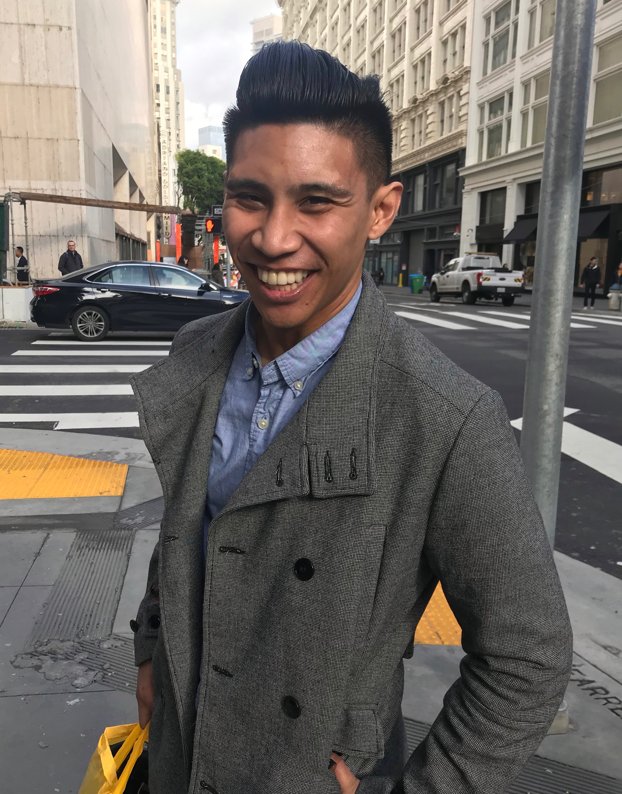

About Me
My name is Ian! US Air Force veteran, currently working on becoming a future web developer and travel the world. I currently know three languages: Japanese, Tagalog (mostly because of I'm Filipino and my parents wanted me to be cultured), and English. Hobbies include working out, hiking, and my newest hobby and hopefully leads to more: photography. I really enjoy trying new foods and recreating them in my own kitchen when I have the chance. I have one cat, his name is DJ who constantly loves to annoy me when I eat, work on projects, pretty much anytime I'm home since he has seperation anxiety.
My journey into coding began while I was in the military, around 2015. My mother-in-law asked me a simple question: What would I do outside of the military? Which led to a few weeks scratching and worrying about our future. And accidentally while I was on FaceBook I saw an ad for a coding bootcamp in Seattle. Curiously enough, it got me thinking, as I love to work on my computer after work. Fast-forward a few years and moving around and some smart money decisions finally led myself to apply for a bootcamp. I am also going to school to receive my bachelors' in Computer Science.